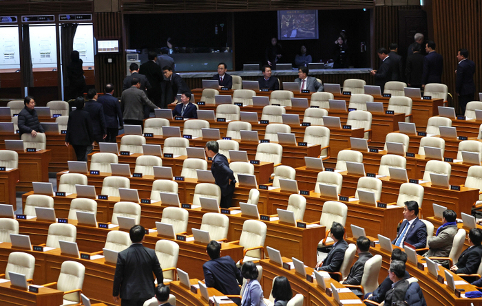

"국민의 대의기관이 스스로 국민을 배신하고 도망쳤다."
2024년 12월 7일, 윤석열 대통령에 대한 1차 탄핵소추안이 국회 본회의에서 '표결 불성립'으로 자동 폐기되었다. 비상계엄 선포라는 초유의 사태에도 불구하고, 여당 의원들은 '당론'이라는 명분 하에 본회의장에 입장하지 않거나 집단 퇴장하는 '보이콧' 전략을 택했다.
이로 인해 의결 정족수(재적 의원 3분의 2 이상 찬성) 확인을 위한 투표조차 진행되지 못했다. 윤 대통령은 즉각 직무에 복귀했다. 국회 밖에서 탄핵 가결을 외치던 100만 효빈 시민과 국민들은 허탈함과 분노를 감추지 못했다.
"8호선은 여전히 의심스럽다" 궤변 늘어놓는 친윤계
탄핵 부결 직후, 비상계엄의 명분이었던 효빈 도시철도 8호선에 대한 음모론은 수그러들기는커녕 더욱 기승을 부리고 있다. 윤재훈 전 후보와 우신면 전 의원 등은 SNS를 통해 "탄핵 부결은 8호선 지하 벙커의 진실을 밝히라는 하늘의 뜻"이라며 또다시 궤변을 쏟아냈다.
시민사회는 "입법부가 행정부의 내란 시도를 용인해 준 꼴"이라며 2차 탄핵 추진과 범국민적 불복종 운동을 예고해 정국은 한치 앞을 내다볼 수 없는 시계제로 상태에 빠졌다.